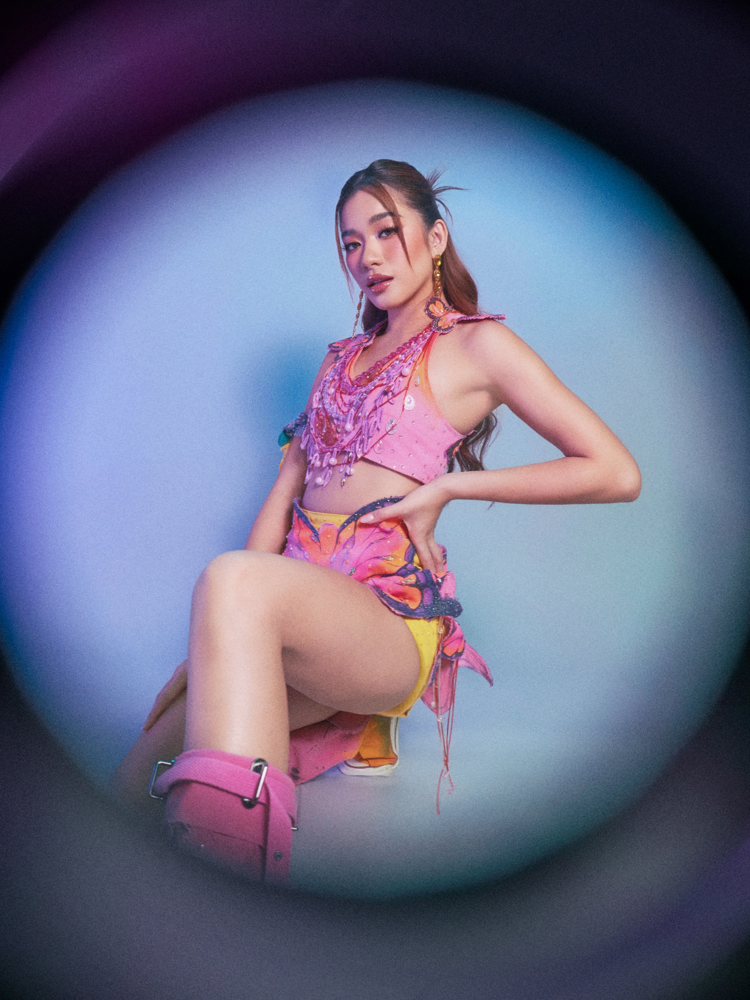

BINI AIAH

Name: Maraiah Queen Jaraula Arceta
Stage name: Aiah
Born: January 27, 2001
Birthplace: Lapu-Lapu City, Cebu, Philippines
Education: Enrolled at Enderun Colleges in Taguig in 2022, studying Architecture in Interior Design and Multimedia Arts as a scholar.
Family: She has one brother; parents Dick and Mary Louh Arceta
Early Activities:
- She was active in pageants and modeling in her youth, winning multiple titles, including Miss Silka Cebu and Miss Silka Philippines 2018.
- Auditioned for ABS-CBN's Star Hunt Academy (SHA) + became a SHA Girl Trainee.
- Also auditioned for Pinoy Big Brother: Otso and tried out for Darna (TV series) but did not get those parts
Position within BINI: Main Visual, Main Rapper, and sub-vocalist
Songwriting:
She co-wrote the lyrics to "Kapit Lang" (2021) and specifically wrote its rap verse.
Other collaborations / projects:
- Starred in the music video for "Bini" by Jeremy G in 2023, then later co-starred in its remix version in 2024.
- Appeared as guest judge or on television shows (e.g. Drag Den, Kuan on One)
Interests, Personality & Lifestyle:
- Described as having been shy in her younger years, moving to Manila and joining BINI was a big step.
- Interests / hobbies:
- Jogging, hiking.
- Drawing and swimming.
- She values time with family, grounding herself when possible, and rest. Given her busy schedule, she's intentional about downtime.
"All along, acceptance is the right one. Acceptance that not all days can be happy days. That I could learn to accept that my day went bad but it's still a win for me because I survive the day."